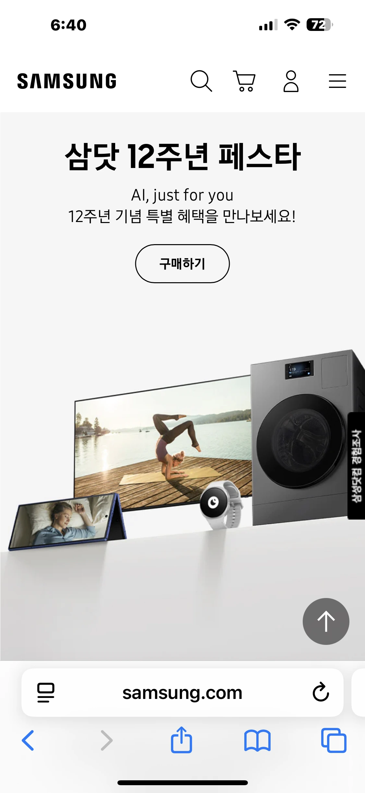
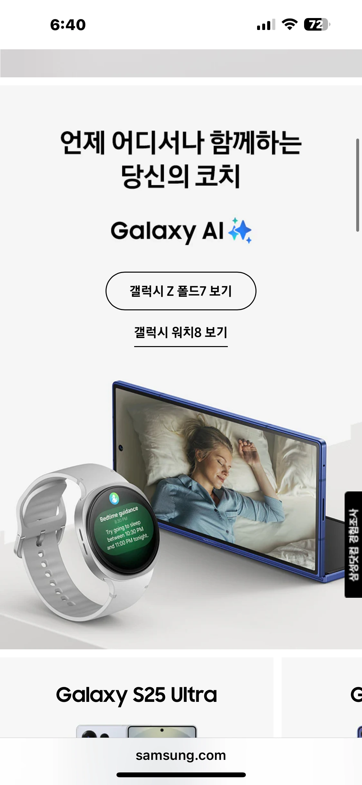
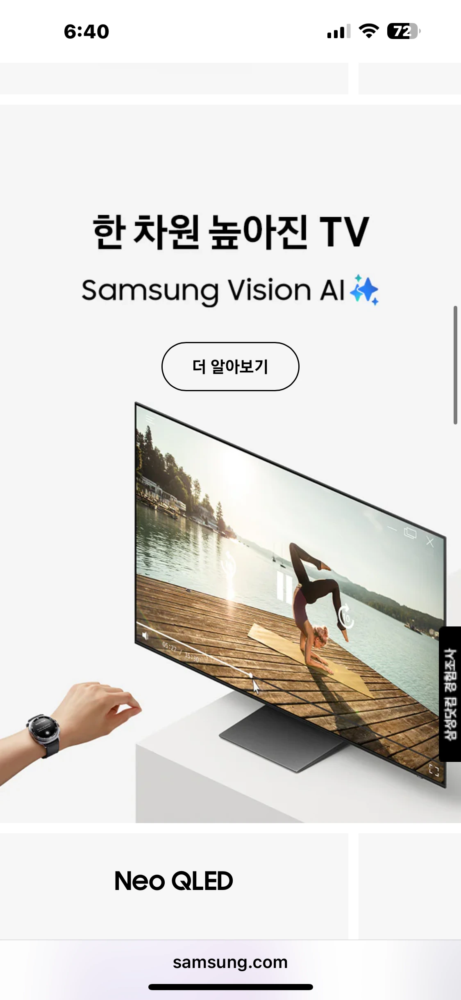

shading & texturing , animation , compositing , solo project
새로운 광고주였던 삼성닷컴을 대상으로 전 인원이 함께 시안을 기획하고 제작했으며, 최종적으로 해당 시안이 채택되면서 삼성닷컴 프로젝트를 수주하게 되었습니다. 이후 약 1년간 삼성닷컴 광고를 진행하며, 저는 채택된 시안에 맞춰 제품의 배치와 카메라 무빙을 직접 구상하고 제작했습니다. 그리고 애니메이션뿐만 아니라 스태틱 KV 제작에도 참여했습니다.
특히 카메라 무빙은 기존에 정해진 연출을 그대로 제작하는 것이 아니라, 제품을 어떻게 보여줘야 시안의 분위기와 메시지를 더 효과적으로 전달할 수 있을지 직접 고민하며 아이디어를 내고 구현했습니다. 제품의 움직임과 카메라의 흐름을 함께 구성해 하나의 장면으로 완성했으며, 이를 통해 단순히 주어진 작업을 수행하는 것을 넘어 직접 아이디어를 제안하고 실제 결과물까지 연결하는 경험을 쌓았습니다.
새로운 광고주를 확보하기 위한 시안 제작부터 실제 삼성닷컴 광고를 약 1년간 지속적으로 제작하는 과정까지 경험하며, 아이디어를 실제 광고 콘텐츠로 발전시키는 역량을 키울 수 있었습니다.


